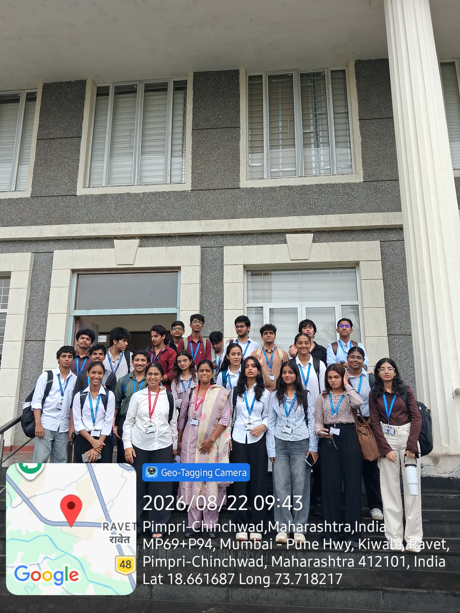

Featured project
Global Cybersecurity Threat Visualization
A menu-driven Python data analysis and visualization project exploring global cybersecurity threats through CSV processing, filtering, sorting and graphical analysis using Pandas and Matplotlib.
- Language
- Python
- Data handling
- Pandas
- Charts
- Matplotlib
- Data format
- CSV